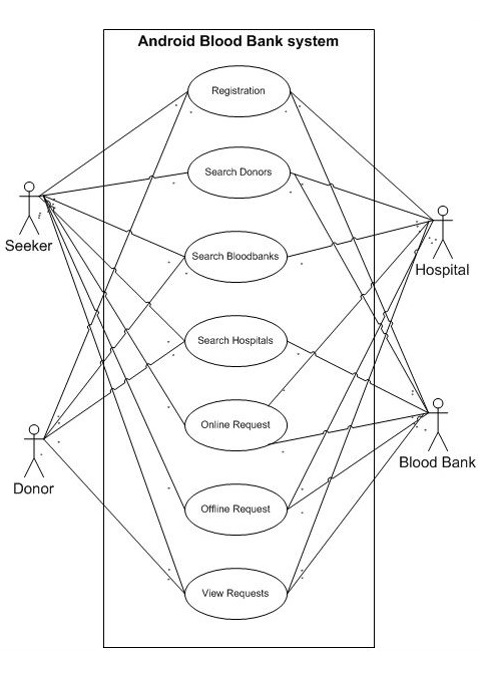

Project Specifications
1. Mission Statement:
At the heart of our endeavor lies a noble mission – to connect blood donors with those in need, saving
lives and fostering a culture of regular blood donation. Our mobile application aims to create a seamless bridge
between willing donors and recipients, ensuring that the life-saving gift of blood is readily available to those
who require it the most.
2. Problem Space:
Problem Statement:
The pressing problem we aim to address is the significant shortage of blood donations in many regions.
This shortage leads to critical challenges in accessing life-saving blood when needed, potentially putting the
lives of patients in jeopardy.
Problem Background:
Blood shortages have grave consequences for patients requiring transfusions due to medical
emergencies, surgeries, or chronic conditions. The insufficiency is attributed to various factors, including limited
awareness about blood donation, inconvenient donation processes, and the lack of efficient communication channels
between donors and recipients.
3. Research Insights:
User Pain Points:
- Donors:
- Uncertainty about the availability of donation centers and events.
- Limited access to comprehensive information about blood donation campaigns.
- Difficulty finding eligible donation opportunities based on their specific blood type and location.
- Recipients:
- Struggle to find compatible donors during emergencies or planned medical procedures.
- Lack of a centralized platform to connect with potential donors easily.
- Insufficient awareness about the importance of blood donation and its impact on saving lives.
Buyer Persona 1: John Donor
- Age: 30
- Occupation: Software Engineer
- Motivations: John is compassionate and community-driven, eager to make a positive impact and save lives
through regular blood donation.
- Pain Points: Due to his demanding job, he finds it challenging to locate nearby blood donation events or
campaigns, leading to infrequent donations.
Buyer Persona 2: Sarah Recipient
- Age: 45
- Occupation: Teacher
- Motivations: Sarah is a dedicated teacher who values her health and wellbeing. In case of a medical emergency,
she relies on blood transfusions to survive and recover.
- Pain Points: During emergencies, Sarah faces difficulty finding compatible blood donors quickly, resulting in
increased stress and delays in accessing life-saving blood.
Supporting Data:
- Studies indicate that approximately 70% of blood banks report periodic shortages in various regions, highlighting
the urgency of addressing the issue.
- Only about 5% of eligible individuals donate blood regularly, leaving a significant gap between supply and
demand.
- Surveys reveal that nearly 60% of blood recipients face difficulties in finding donors with matching blood
types, exacerbating the challenges they already face.
Feedback:
- During user interviews and prototype testing, participants emphasized the need for an intuitive mobile app that
simplifies blood donation processes.
- Potential users expressed a strong interest in receiving timely notifications about donation campaigns and nearby
blood drives to stay engaged and informed.
4. Landing on the Solution:
Explanation of Solution:
Our solution is the Blood Donation Mobile Application, a user-friendly platform that facilitates
seamless connections between blood donors and recipients. The app will offer an easy and convenient way for users to
schedule blood donations, receive updates on nearby donation events, and foster communication between donors and
recipients.
System Models:

Database Design:
Use Case Design:

5. Technical Details:
Tech Stack:
Our technical architecture will leverage cutting-edge technologies to provide a robust and scalable
platform for our users:
- Front-end: We will use React Native to develop a cross-platform mobile app that ensures a consistent and smooth
user experience.
- Back-end: The application will be powered by Node.js and Express.js, providing a reliable foundation for
server-side operations and data management.
- Database: MongoDB will serve as our database solution, allowing us to efficiently store and retrieve user
information and donation-related data.
- Authentication: Firebase Authentication will be integrated to ensure secure user authentication and safeguard
sensitive user data.
6. Other Important Tasks:
Pre-launch Buzz Campaign (Articles and Social Media Posts):
To build anticipation and awareness, we will create engaging articles and blog posts about the
importance of blood donation, success stories, and the impact of the app on saving lives.
A well-planned social media strategy will be executed, focusing on sharing informative content,
testimonials, and sneak peeks of the app's features to generate excitement among potential users.
Search Engine-Optimized Website Landing Page containing Articles and Blogs:
We will design and develop an aesthetically pleasing and search engine-optimized website that showcases
valuable information about blood donation, its significance, and the role of our app in making a difference.
The website will include a compelling future app launch message, encouraging visitors to subscribe for
updates and be part of our mission to save lives.
Conclusion:
The Blood Donation Mobile Application endeavors to revolutionize the way people engage with blood
donation, ensuring a steady and accessible supply of life-saving blood for those in need. By leveraging technology
and user-centric design, our app will create a positive impact on society, inspiring individuals to become regular
blood donors and join us in the mission of saving lives, one donation at a time. Together, we will build a culture
of compassion and selflessness, where every drop of blood donated brings hope and healing to those in critical
conditions.